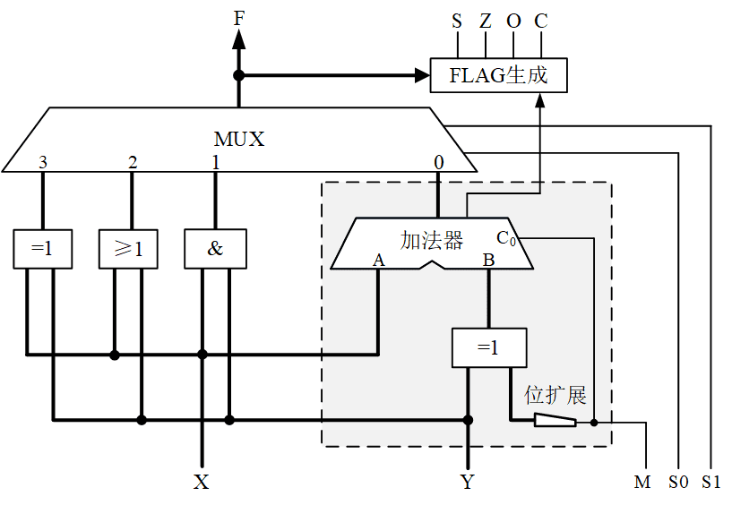
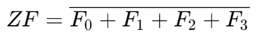

算术逻辑单元实验
实验原理
计算机除了能够进行加减运算，还要能够进行逻辑运算。实现加减运算和逻辑运算的电路称为算术逻辑单元（ALU，Arithmetic Logic Unit）。图 1是一个简单ALU的设计，虚线框内是前面实验完成的加减运算电路，只是简化了画法，将4位数据用一根较粗的信号线表示；增加了与（AND）、或（OR）、异或（XOR）逻辑运算，并通过一个四选一多路器选择运算的功能。

图 1. 简单ALU原理图
该ALU电路没有用非门实现逻辑非（NOT）运算，这是因为异或1可以实现取反。通过使Y各位全为1，选择异或运算可以实现对X的非运算。
图 1电路还产生S、Z、O、C四个运算结果的特征标志，通常用于数值大小的比较判断，在后面的实验中将会用到。这四个标志的含义如下。
-
SF（Sign Flag）：符号标志。
SF＝1表示结果为负数，SF＝0表示结果为正数。
-
ZF（Zero Flag）：零标志。
ZF＝1表示结果为零，ZF＝0表示结果非零。
-
OF（Overflow Flag）：溢出标志。
OF＝1表示结果溢出，OF＝0表示结果不溢出；。
-
CF（Carry Flag）：进位标志。
CF＝1表示有进位，CF＝0表示没有进位。
OF和CF由加法器产生，在前面的实验中已经完成。这个实验还需要完成符号标志和零标志的检测电路。 因为运算结果的最高位就是符号位，所以符号标志的生成逻辑非常简单，逻辑方程如下：
SF=FS
一种简单的零标志生成方法是，将运算结果的每一位进行或运算，如果结果为0，则零标志为1。以4位二进制为例，产生零标志的逻辑方程如下：

| 进位标志和溢出标志必须由加法电路产生，而零标志和符号标志通常根据ALU的运算结果产生。如果逻辑运算的结果为零，零标志也会为1。 |
预习要求
-
理解实验原理。
-
阅读第一章Digital仿真软件使用指南的“层次化设计”。